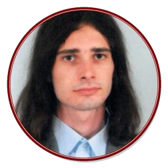

SOC Tool
Разработих работно пространство, в което анализаторът проверява индикатори и събира данни за случая. Юлската уеб версия надгражда по-ранните настолни инструменти. На страницата на проекта се вижда браузърният интерфейс с примерни данни.
Професионален профил
Работя в секция „Киберзащита“ на Банка ДСК в София, където разследвам фишинг, сигнали от крайни устройства и уеб заплахи. Извън реагирането на инциденти създавам софтуер за анализатори, изследвам как езиковите модели обработват чувствителни данни и провеждам тестове за проникване в уеб, API и Active Directory среди.

София, БългарияРазработих работно пространство, в което анализаторът проверява индикатори и събира данни за случая. Юлската уеб версия надгражда по-ранните настолни инструменти. На страницата на проекта се вижда браузърният интерфейс с примерни данни.
Разработих браузърни разширения, локален агент и конзола за политики. В документиран тест сравних как една политика обработва текст и изображение. Резултатът „нула открития“ има различно значение, когато скенерът не е успял да прочете входа.
Разработих среда за преглед на тестове на езикови модели. Всяка уязвимост води до разговора, от който е изведена. Увереността и тежестта се оценяват отделно и всяко изпълнение може да се сравни с базов резултат.
Обединих публични експериментални данни на NASA за горене в микрогравитация, модел в браузъра и 3D интерфейс. В отделна статия показвам как се променя оценката, когато запазим цял експериментален режим за проверката.
Започнах с ремонт на хардуер и поддръжка на мрежи. В SOC се научих да проследявам едно събитие през няколко системи — писмо може да изглежда убедително, докато данните от устройството или системите за идентичност не покажат друга картина. Този практически въпрос — какво доказателство е нужно на анализатора — стои зад повечето ми разработки.
От първоначалния сигнал възстановявам последователността на събитията. Съпоставям удостоверяването и съдържанието на писмото с наблюденията от крайното устройство, системите за идентичност и мрежата. Описвам на какво се основава оценката и какво остава за проверка.
В лабораторната си работа сравнявам поведението на приложения при промяна на промпта, добавените документи или правата за използване на инструменти. Пазя разговора и конфигурацията заедно с уязвимостта, така че друг изследовател да може да прецени извода.
В лаборатории за уеб приложения, API и Active Directory работя по задания с определен обхват, оценявам уязвимостите и пиша технически доклади. Подготовката за CPTS ме научи да обяснявам последиците за системата и да предлагам корекция, чийто ефект може да се провери.
С Python, PowerShell, JavaScript и REST API свързвам инструменти, които анализаторът използва в едно разследване. При пакетните проверки обръщам внимание на изтеклото време за отговор, непълните резултати и информацията, която достига до следващата смяна.
Инженерната физика и радиолюбителската ми правоспособност клас 2 стоят зад интереса ми към радиокомуникациите. В магистърската си работа разгледах управлението и видеопотока на Ryze Tello. Резултатите станаха основа за съавторска научна публикация.
В дипломната си работа изследвах сигурността на дрон, управляван през Wi-Fi. Достъпът до мрежата, правото на управление и поверителността на видеото се оказаха три отделни въпроса при оценката на една безжична система.
Работата с измервания, сигнали и физични системи оформи подхода ми към тестовете за сигурност. И днес започвам с въпроса какво действително е измерено и при какви условия.
Hack The Box · CPTS
HTBCERT-7F5995C2FE
Проверка в Hack The BoxМартин Стефанов, Милен Петров и Аделина Алексиева-Петрова.
В пет лабораторни изпитвания изследвахме достъпа до Wi-Fi мрежата, надеждността на управлението и поверителността на видеото на Ryze Tello. Работата продължи темата на магистърската ми теза.
Първо място на RUSE AI HACK 2026 с отбора Golden 4. Във FormWise, нашия асистент за административни процедури, участвах в тестването на промптове и в обвързването на отговорите с конкретни източници.
Търся роли, които съчетават инженеринг на сигурността, AI сигурност, red teaming и практически изследвания. Най-много ме привличат задачи, в които превръщам реално наблюдение в софтуер, който друг професионалист може да използва, провери и подобри.
Български (роден) · Английски (професионално ниво) · Руски (средно ниво)